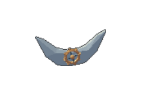
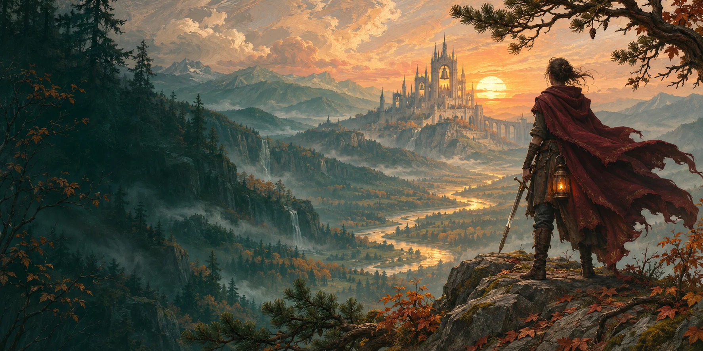
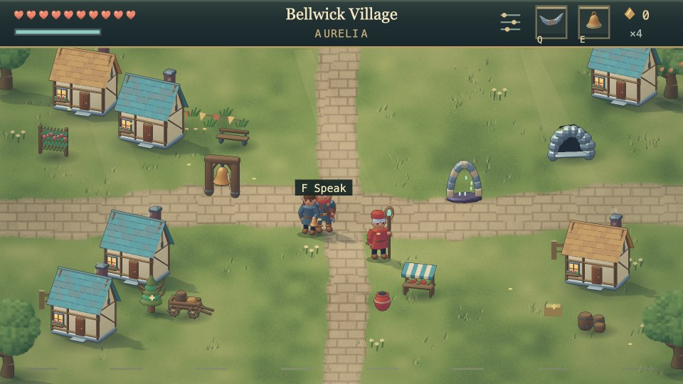
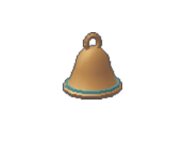
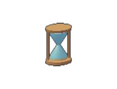

Gale Disc
Throw a returning blade through vines or ring a distant switch across a gap.

Echoes of the Hollow Crown
Take up your missing mentor’s lantern. Cross into the shadow of a familiar kingdom in this top-down fantasy adventure.
2 intertwined worlds
10 dungeons
11 tools & treasures
The worlds
Three nights ago, Ione rang the west bell. Her lantern came back alone. Follow its light from Bellwick Village to the Gloam, where even familiar roads lead somewhere strange.

Field guide
Each dungeon hides an instrument. Equip two at a time, learn what they can change, and carry them back to places you’ve already explored.

Throw a returning blade through vines or ring a distant switch across a gap.

Sound the chime to reveal hidden stepping stones and silence the singers of the Drowned Choir.

Halt marked gears and foes for four seconds. Slip through the mechanism before time catches up.
How to play
Find Merin on the village green and collect the Burst Satchel. Ring the bell to restore your supplies, then head northwest to Mossbell Sanctuary.
Begin your journeyOn touch screens, use the directional pad on the left and action buttons on the right. On a gamepad, move with the left stick or D-pad. The bottom face button strikes and the left bumper guards.
Open Settings from the title or pause menu to adjust graphics, volume, and motion. Progress saves in this browser. Use Export save and Import save in the pause menu to move your journey to another device.